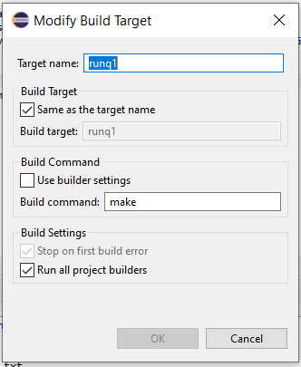
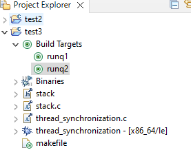

Eclipse IDE for C Programming
Several different compilers are available to you, depending on your computer’s operating system and requirements.
- All the assignments for this course will need GNU Compiler Collection (gcc) compiler. Generally, you can use Cygwin/Xcode developer tools for most assignments, but some may require a Linux GCC compiler.
- If you are comfortable with Eclipse, install it on your computer system by following the instructions from Bohr1. For GCC compiler, we will connect the docker container
gccsetup above to Eclipse.
Once Eclipse is installed, there is a docker plugin for Eclipse, using which you can perform many of the mentioned Docker tasks from within Eclipse. To install the plugin in Eclipse, from the menu, click on Help –> install –> Eclipse Marketplace –> Search for Eclipse
Docker Toolingand install it.You can switch to the
Docker Tooling perspective(either click on the Open Perspective toolbar button at the top-right of the editor window or select from the Window | Perspective | Open Perspective | Other menu).Make sure your CDT for Eclipse is set up, open the perspective, and create a C programming project.
Open the Project Properties by right-clicking
Project > Properties.In Properties, select
C/C++ Build > Settingsand open theContainer Settingstab to set the following:- Configuration: Default [Active]
- Connection:
http://localhost:2375for Windows and on Macunix:///var/run/docker.sock - Image: gcc:latest (or any other name that you are using for docker containers)
Check
Build Inside Docker Image.Select the docker image to use. If there are no images listed, verify that Docker is running.
Click
Apply and CloseTo compile the program: Click the
Build Iconand Confirm that the console prints “Running in image…”To run the program, either:
- Create a Run Configuration with
Run > Run Configurations. - Create a new C/C++ Container Launcher.
- Pass the arguments needed, such as file names.
- On the container tab, verify the gcc:latest image selected and click on Run.
- Create a Run Configuration with
OR
- Right-click on the project –> Build Targets –> Create Targets and under that, create a name of the target, e.g.,
runq1and commandmakeas given below:

Click save and select the target to run the program under
Build Targets.
Click the Run icon.
Confirm that the console prints
Running in image....
- If you chose to use WSL, then you can add Ubuntu Terminal to Eclipse:
- On Eclipse: Navigate to Windows -> Preferences -> Terminal -> Local Terminal
- Add the following entry
- name: WSL Bash
- path: C:\Windows\System32\wsl.exe
- On the Project Explorer: On any file, right-click -> show in… -> WLS Bash.
- It will open the project folder in the Terminal, and you can use the
Makefilecommands to execute your code.
Footnotes
Thanks to Mr. David Brown.↩︎